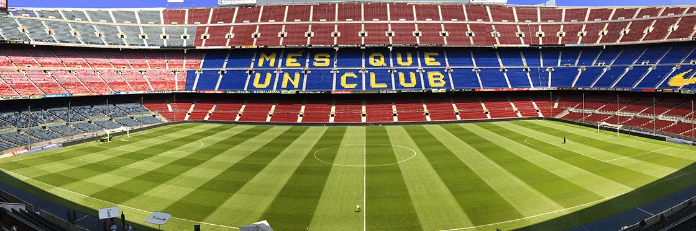

Barcelona is a city on the coast of northeastern Spain.
It is the capital and largest city of the autonomous community of Catalonia,
as well as the second most populated city in Spain.
5 Places YOU need to Visit in BARCELONA
-
1. Camp Nou
- 
- Camp Nou meaning new field, often referred to in English as the "Nou Camp" is a football stadium in Barcelona, Spain.
It opened in 1957 and has been the home stadium of FC Barcelona since its completion.
-
2. Basílica de la Sagrada Família
-

- The Basílica de la Sagrada Família, also known as the Sagrada Família,
is a large unfinished Roman Catholic minor basilica in the Eixample district of Barcelona, Catalonia, Spain.